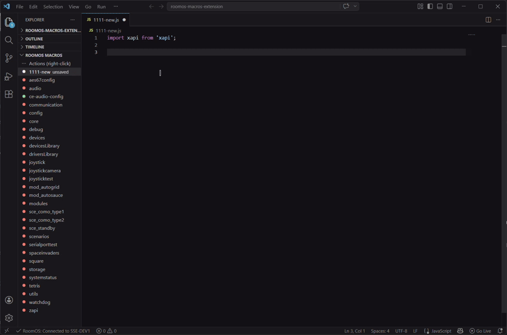
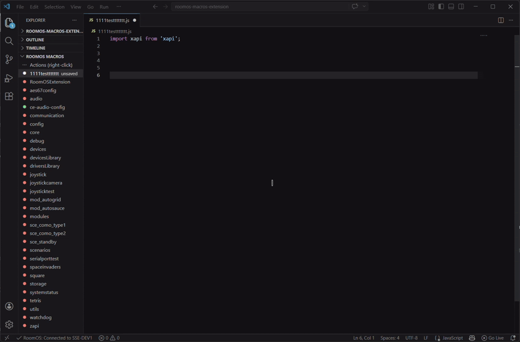

Edit your Cisco RoomOS macros
directly in VS Code
No more tedious copy-pasting from the web interface. Manage all your macros with the power of the VS Code editor, IntelliSense, AI agent coding, and native debugging tools.
The Technological Core: The Virtual File System
Local Environment
(VS Code)
Remote macros appear and behave exactly like standard local files thanks to the virtual file system.
Remote Environment
(Cisco Codec)
RoomOS Macro Framework
The Art of Live Sync
The feedback loop is reduced from several minutes to a fraction of a second.
You save, the codec executes.
Code Editing
Write in VS Code
Quick Save
Press Ctrl+S
Instant Deployment
Executes immediately
Automatic Framework Restart
(via codec.autoRestartOnSave parameter)
IntelliSense xAPI: The Developer's Copilot
Intelligent IntelliSense predicts valid paths as soon as you type the root.
Command
xapi.Command.Audio.Volume.Increase()
Status
xapi.Status.Call[1].Status.get()
Config
xapi.Config.Audio.DefaultVolume.set(50)
Event
xapi.Event.CallDisconnect.on(event => {...})
Code Acceleration: Stubs and Documentation
xAPI: Insert Stub
A right-click instantly generates the indented code block ready for use.
xAPI: Show Help for Symbol
xapi.Command.Video.Matrix.Assign({ Output: 1, Source: 2 })
Assigns a video source to a video output.
Parameters:
- Output: (Integer, required) The video output connector ID. Value range: 1-3. Default: 1.
- Source: (Integer, required) The video source connector ID. Value range: 1-3. Default: 1.
- Mode: (String, optional) The assignment mode. Values: 'Manual', 'Auto'. Default: 'Auto'.
Real-time Debugging: End of the Black Box
Follow the output of your active macros without ever leaving your workspace.
Fleet Management: Multiple Profiles
ROOMO S MACROS
▼ Profiles
Add New Profile
Reliability and Resilience: The Integrated Safety Net
Automatic Reconnection
Handles network failures gracefully with automatic reconnection attempts. Manual relaunch available via the title bar.
Protection Against Deletion
codec.confirmMacroDelete is enabled by default. Requires explicit confirmation before permanently deleting a macro from the device.
Intelligent Restarts
Automatic restart of the framework upon macro activation or deactivation (codec.autoRestartOnActivateDeactivate).
3-Step Quick Start
Install
Search for "RoomOS Macros" by Zacharie Gignac in the Marketplace (Ctrl+Shift+X) and click Install.
Connect
Click on "Add New Profile" and enter the IP address of your codec and your administration credentials.
Code
Existing macros are displayed. Create, edit, save, and deploy instantly.
AI-Assisted Coding
Intelligent code completion powered by AI agents

Quick Actions via Context Menu
Right-click macros for instant access to common operations

Comprehensive Settings
Fine-tune every aspect of your development experience

Insert xAPI Stub
Generate complete code blocks with a single right-click

Real-Time Console Output
Debug your macros with live console feedback

xAPI Help at Your Fingertips
Instant documentation and parameter details

The RoomOS Macros extension transforms coding for Cisco infrastructure into a modern, secure, and centralized software development experience.
Independent Community Project
Created with passion by Zacharie Gignac for the Cisco collaboration community
https://marketplace.visualstudio.com/items?itemName=ZacharieGignac.roomos-macros-extension
Not affiliated with Cisco Systems, Inc.